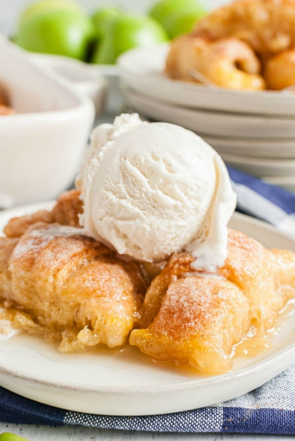

Apple Dumplings

A treat that goes great with with ice cream!
This dessert tastes good whether it's hot from the oven or cooled to room temperature.
And you can tell yourself that it's you're getting your daily serving of fruit ;)
Ingredients
- Diced Apples
- Butter
- Brown Sugar
- Cinnamon
- Ground Ginger
- Salt
- Puff Pastry
- Egg
Steps
- Melt the butter in a pan. Add the brown sugar, cinnamon, ginger, and salt, and stir until the sugar has melted completely to make the sauce.
- Add the diced apples and toss until they are fully coated. Remove the pan from heat.
- On a floured surface, roll out the puff pastry until it has doubled in size. Cut it into 4-inch squares.
- Whisk egg with 1 tablespoon of water to make egg wash.
- Fill each square with apples. Brush the edges of the squares with egg wash. Fold each corner over the apples until they are completely enclosed. Brush entire dumpling with egg wash.
- Bake for 18-20 minutes at 375°F.